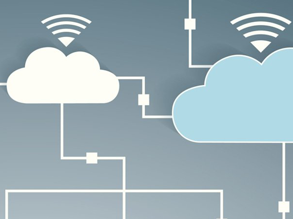
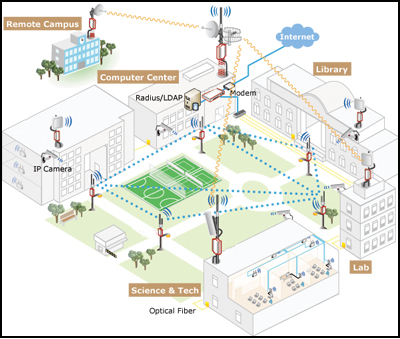

    <div class="container bg2 clearfix">
        <div class="bodycontainer clearfix" id="maincont">
            <div id="mainleft">
                <h1>Cloud Controlled Wifi</h1>
				
				
                <p>At Vayulink we provide cloud controlled Enterprise
				Wifi Solutions and a seamless wireless Experience.</p>
                <p>Scalable Reliable and Robust controller in the cloud lets you easily configure, manage, and troubleshoot your Wireless LAN Network.</p>
                <h2>Long Distance P2P and P2MP links</h2>

                <div class="grid">
                    <div class="column-6">
                        <p><strong>Point 2 Point</strong></p>
						<p>Using High Power Radios, Directional Antennas and best in class synconization technology Wifi link of 50 kms can be formed
						P2P links are really useful in places where laying cable is not feasible due to environmental or commercial reasons.
						Wifi P2P operates in the ISM bands and is licence free</p>
						<p><strong>Point 2 Multipoint</strong></p>
                        <p>Same P2P technology can be used to connect a single main location to multiple locations</p>
                    </div>

                 
					                        
                </div>


            </div>

            <div id="mainright">
                <h3>Indoor Outdoor and Mesh Wireless.</h3>
                <h3>Indoor and outdoor Wifi Solutions.</h3>
                <p><b>Indoor Wifi</b> designed for maximum users and more channel capacity per access point.<br>
				<b>Outdoor Wifi</b> equipment has a Rugged Enclosure and  more coverage.<br>
				With the latest 11ac and all-weather enclosures outdoor wifi is best for ISP's and carrier grade wifi</p>
                <br>
                <h3>Mesh Wireless </h3>
                <p>Mesh feature is useful in scenarios where all the nodes in a large coverage area cannot be provided wired backhaul links.<br>
				With Vayulink  Mesh the Access Points form a wireless backhaul automatically when a wire link is not present.
				Both our Indoor and Outdoor solutions are equipped with Auto Mesh feature,with zero config.
				</p>
            </div>
        </div>
    </div>